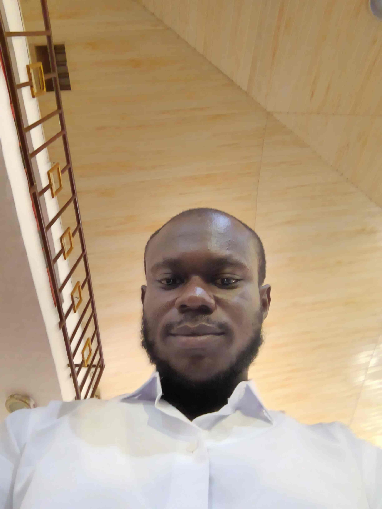

Home
About Me
My name is Uzoka Shadrack Chinedu, and I am currently studying Web and Computer Programming.
I am passionate about technology, web development, and creating responsive and
user-friendly websites. I enjoy learning how HTML, CSS, and JavaScript work together
to build modern web applications.
I am continuously improving my skills in frontend development, responsive design,
accessibility, and user experience. My goal is to become a professional software
developer capable of building functional and visually appealing digital solutions.
Outside academics, I enjoy researching technology trends, solving programming
challenges, and working on personal projects that strengthen my problem-solving
abilities and creativity.
Student Photo
